Silica Sand
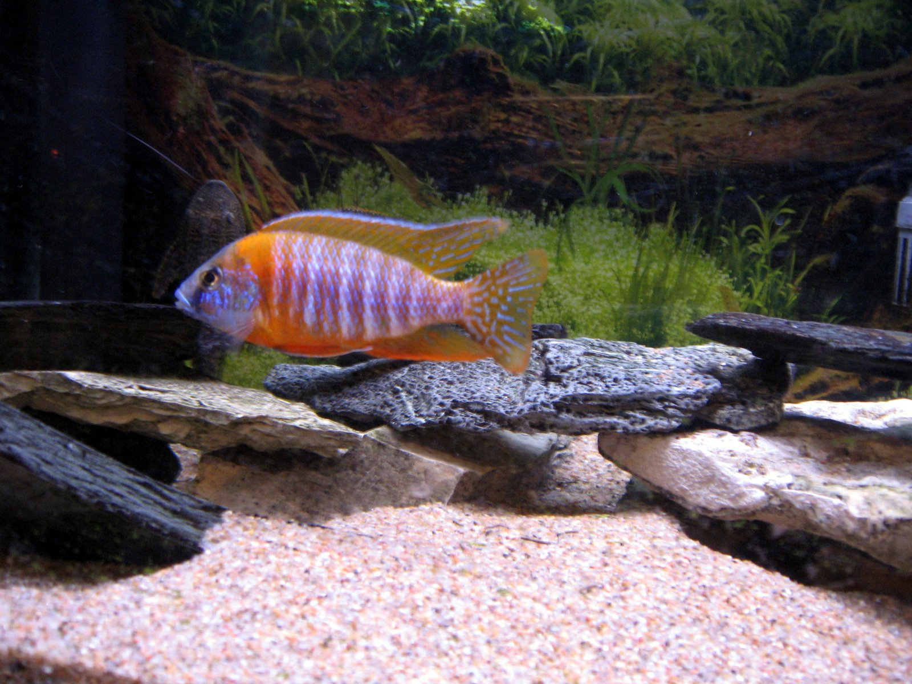
Silica sand is a lighter tan and is very uniform and fine in grain size.
It cleans very easily and provides a nice look
It’s very afffordable and can usually be found for 10 dollars or less per 100 lb. sack.
Order Now
Coral Sand
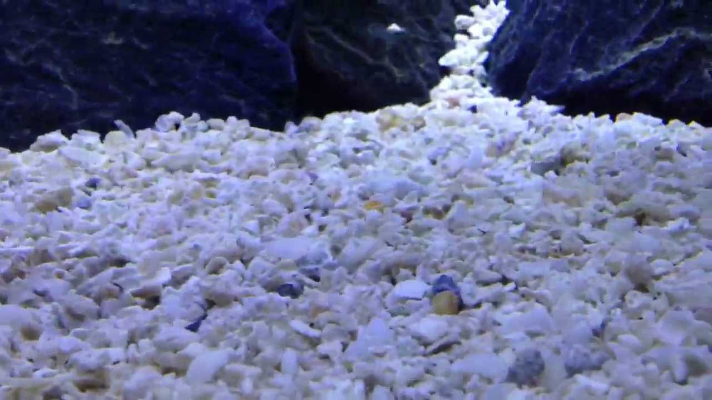Coral sand is made from corals and is typically used in aquariums where there is a need to keep the pH-value high (alkaline) and the water hard.
It is more expensive than silica sand, iron slag and play sand, but less expensive than aragonite.
Coral sand is usually white with a heterogeneous grain size.
Order Now
Play Sand
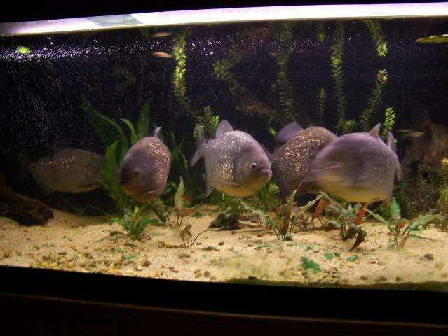
Compared to silica sand, play sand is more heterogeneous when it comes to grain size and colour.
It is normally darker than silica sand and contains quite a lot of clay.
Play sand is inexpensive.
It is sold in large quantities to people who use it to fill up entire sand boxes.
Order Now
Aragonite Sand
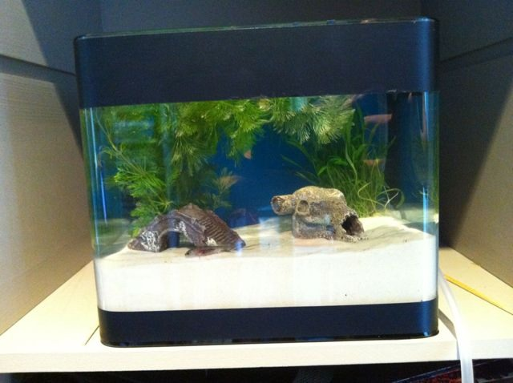Aragonite comes in many different colours and grain sizes.
It is one of the most expensive types of sand.
Just like coral sand, aragonite can help you adjust the pH-value and water hardness in the aquarium.
Order Now
Black beauty
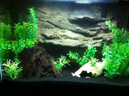Black beauty sand is also used by the sand-blasting industry and can be purchased in home supply stores. It is not naturally occurring sand It is powdered iron slag. The iron will affect the chemistry of your aquarium and this must of course be taken into consideration. Powdered iron slag can have pretty sharp edges therefore not the best choice for species continuously sift sand. Order Now
Tahitian Sand
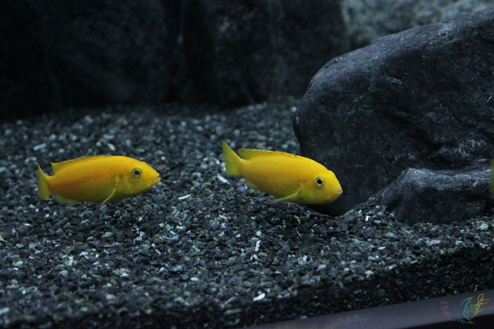
Another example of comparatively expensive sand is the beautiful, but costly, black Tahitian moon sand.
Black Tahitian moon sand is commonly used to make colourful fish look even more flamboyant in aquariums
Since their flashy colouration will contrast sharply against the black sand.
Unlike black beauty, back Tahitian moon sand is not made from iron slag.
Order Now
Improve the water quality of your freshwater tank while enhancing the natural beauty of your aquarium and providing shelter and security for your fish.
Water Wisteria

Water Wisteria grows fast, quickly adding depth and beauty to your freshwater aquarium. It needs minimal maintenance, which makes it a fuss free plant to have.
Java Moss

Java moss is quite popular for freshwater aquariums. It is low-maintenance and tends to grow onto driftwood and rocks.
Lilaeopsis

Lilaeopsis resembles grass and grows up to 2 inches tall. It spreads fast, often along the entire aquarium floor. It may need to be pruned periodically if it is invading other plants.
Amazon Sword

The Amazon Sword plant has leaves that resemble swords. It can grow to be up to 20 inches tall and is ideal for the back of the aquarium. Often they are planted in groups in the back of the aquarium.
African Water Fern

The African Fern is versatile, good for background or foreground. It is often used in the background and needs low maintenance, thriving in most conditions.
Java Fern

Java Fern is very popular since it is low maintenance and very beautiful. It can be used in just about any area of the aquarium.
Green Tiger Lotus

Green Tiger Lotus is a wide-leaf variety that needs very little maintenance. Average environmental conditions help this plant thrive.
Anubias Nana

This plant may grow to 6 inches and has dark leaves. It needs very little care, and is ideal for the beginner.
Cryptocoryne Beckettii

Just like the other plants, Cryptocoryne is very easy to care for and a beautiful addition to your aquarium.
Pogostemon Helferi

The Pogostemon Helferi is an unusual, yet beautiful, foreground plant for aquariums. Its unique look is due to the curled appearance and dark green shade of its leaves.
Air Driven Filter
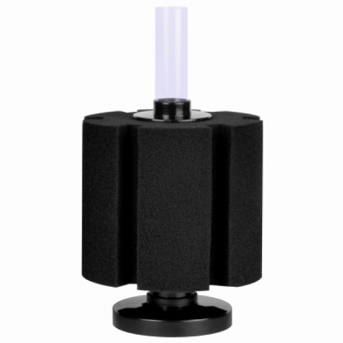
The sponge filter features a design in which a u-shaped tube is used to pull water through a sponge-like material that features a very large surface area.
A separate air pump is needed to provide the air flow.
The sponge material is capable of both mechanical and biological filtration.
Order Now
Internal Filter

Internal filters come in many different styles and are simply placed in the aquarium either on the substrate or mounted to one of the sides with suction cups.
For most internal filters, an airline needs to be attached to the inlet of the filter and is driven by an air pump located outside the aquarium.
Order Now
Canister Filter

Canister filters are pressurized units that are typically placed beneath the aquarium and perform all three types of filtration.
They are available either in a complete unit which includes its own pump or in a modular form that requires an additional pump.
The modular units are useful when plumbed in-line with other types of filtration such as a wet/dry filter.
The complete units use a u-tube as the water intake and typically a spray bar for the water return.
Order Now
Undergravel Filter

An under gravel filter employs a slotted plate that is installed underneath the substrate (like gravel) and has multiple tubes called uplift tubes that extend upward toward the surface of the water.
Either an air stone is installed inside the uplift tubes or a power head is placed on top of the tube to draw water through the substrate and up through the tubes.
The mechanical filtration is achieved as the water flows through the substrate which traps any particulate matter.
Order Now
Trickle Filters
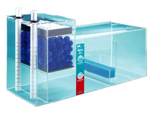Trickle filters are typically located beneath the aquarium and use an overflow device to regulate the amount of water supplied to the filter.
The overflow device incorporates two boxes one inside and one outside the aquarium usually in the back.
A u-tube is used to move the water via a siphon from the box inside the aquarium to the one on the back of the aquarium.
Order Now
Power Filter
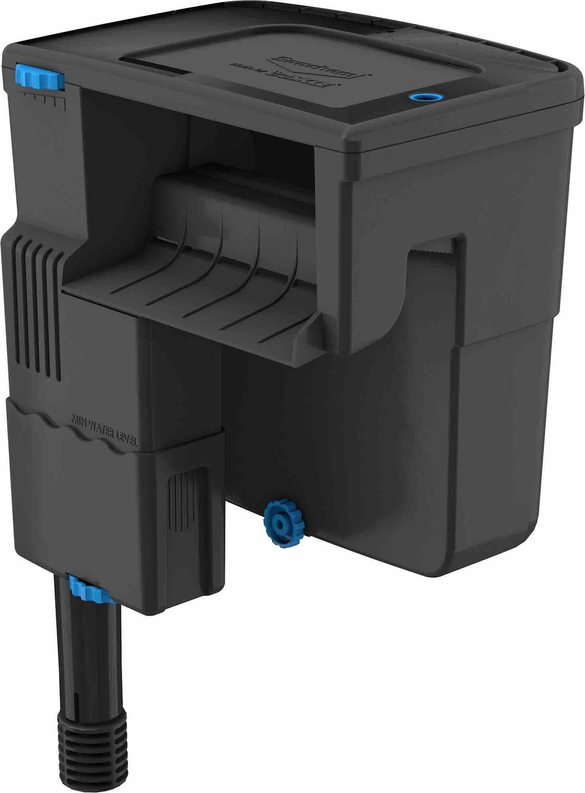
Power Filters is the term used to describe the vast array of filters available on the market that are designed to hang on the back of the aquarium.
Most of these filters employ all three types of filtration and are very easy to maintain.
These units also include the pump necessary to draw the water into the filter and are completely self-contained.
The aquarium water is pulled into the filter using a u-tube and flows through a cartridge or other type of filter media.
Order Now
Bio Balls
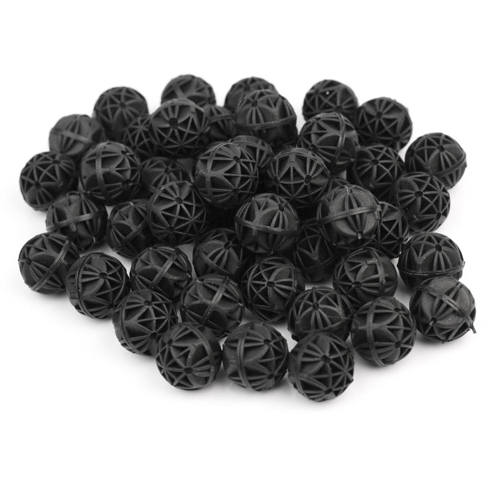Bio Balls are black plastic balls specially designed so as to provide lots of surfaces within the area they occupy.
Bio balls come in many sizes, colours and designs.
Order Now
Ceramic Ring
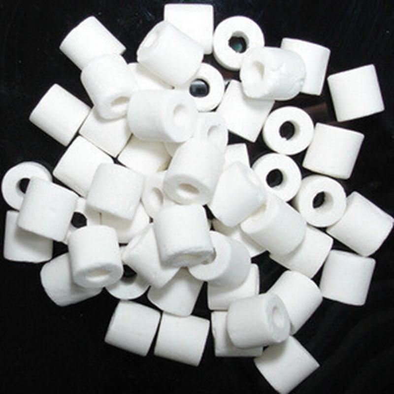Natural filter media: Ceramic is a natural filter media that doesn’t add anything to water while it filters it and doesn’t remove healthy minerals.
Order Now